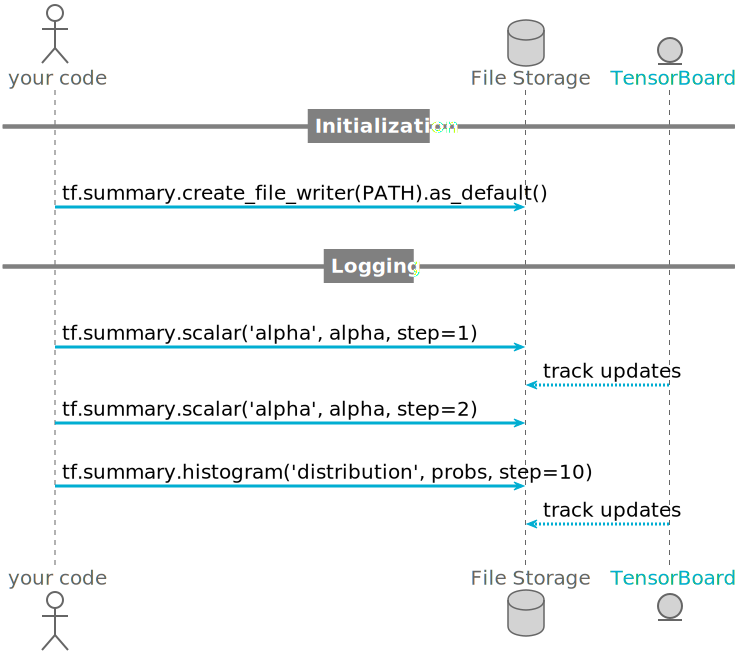
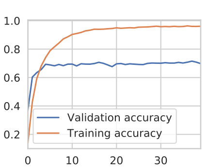
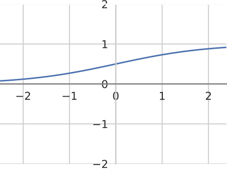
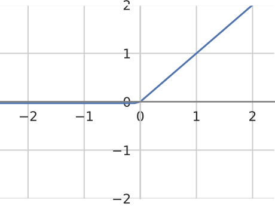

TensorFlow 2 Workshop
February 18, 2020
Introduction round

Thomas Timmermann
- Mathematician
PhD + Habilitation
16 years - Data Scientist
codecentric 1.4 years
- father of three kids
(all ill last week…)
Setting up the environment
No… I haven’t set up anything yet:
git clone https://github.com/thomastimmermann/TensorFlow-2-Workshop.git
cd TensorFlow-2-Workshop
python3 -m venv .venv
source .venv/bin/activate
pip install --upgrade pip setuptools
pip install -r requirements.txtI did all that… but not this morning:
cd TensorFlow-2-Workshop
git pull
source .venv/bin/activate
pip install -r requirements.txt…or go to the repo website and click 
The simplest ML model: linear regression

- Data
- samples \((x_1, y_1), \ldots, (x_n,y_n)\)
- Linear Model
- parameters \(\alpha\), \(\beta\)
predictions \(\tilde y_i = \alpha x_i + \beta\) - Task
- minimize loss \(\sum_i \left(\tilde y_i- y_i\right)^2\)
Online learning via gradient descent
choose \(\alpha\), \(\beta\) randomly
repeat gradient descent steps
compute
- predictions \(\tilde y_i = \alpha x_i + \beta\)
- loss \(L=\sum_i (y_i - \tilde y_i)^2\)
- gradients \(\partial L/\partial \alpha\) and \(\partial L/\partial \beta\)
update
- parameter \(\alpha \leftarrow \alpha - \eta \cdot \partial L/\partial \alpha\)
- parameter \(\beta \leftarrow \beta - \eta \cdot \partial L/\partial \beta\)
:

easyai.tech
Logging progress with TensorBoard


From Keras to tf.keras

- 05/2015
- Keras as a high-level API to Torch, Theano, Caffee
- 09/2016
- tensorflow becomes default backend of Keras
- 11/2017
- tf.keras integrates Keras API into tensorflow
- 09/2019
- tensorflow 2.0 with tf.keras as official high-level API
Step 3: Train your model
feeding training data in batches over several epochs


Using functional API to build models

from tensorflow.keras import layers, Model
image_1 = layers.Input((28,28,1))
image_2 = layers.Input((28,28,1))
probs_1 = classifier(image_1)
probs_2 = classifier(image_2)
both_probs = layers.Concatenate()([probs_1, probs_2])
dense = layers.Dense(32, activation='relu')(both_probs)
prediction = layers.Dense(1, activation='sigmoid')(dense)
matcher = Model(inputs=[image_1, image_2], outputs=[prediction])
TensorFlow Extended
orchestrate ml pipelines with pre-built components

using
Apache Beam/AirFlow/Kubernetes, andML MetaDatalibraryTF Data Validation,TF Model Analysis,TF TransformTF Serving/TF Lite/TF.js
TensorFlow Serving

TensorFlow Model Analysis
- distributed evaluation
- on large validation data
- in-depth analysis
- on slices of the data

Artificial neural networks
nets of perceptrons

perceptrons = artificial neurons

Common activation functions
purpose: induce non-linearity
(compositions of linear functions are… linear)
sigmoid

tanh

relu

selu

Batch Normalization Layer

\(\to\)

- What
- for each batch, rescale input components (mean 0, variance 1)
- Why
- regularization
- When
- after convolutional layers and before activation
- Keras Layer
BatchNormalization()
Dropout Layer

- What
- randomly drop input components
- Why
- regularization
- When
- after dense layers
- Keras Layer
Dropout(rate=0.5)
2D-Convolutional layers

- What
- sliding-window perceptron
- Why
- extract patterns
- Keras Layer
Conv2D(filters, kernel_size, strides,...)